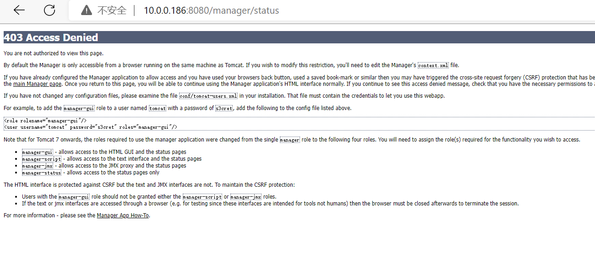

[TOC]
一、JDK的安装 JDK是 Java 语言的软件开发工具包,JDK协议基于 JRL(JavaResearch License)协议
java程序的源码是.java，需要使用JDK里面的javac将.java转换为字节码（.class），在通过虚拟机将字节码转换为Linux和Windows里的机器码
JDK分为免费版（openjdk：测试环境使用）和收费版（oraclejdk 8版本以后收费：生产环境使用）
openjdk的安装，只需要yum或者apt即可安装
[root@Rocky ~]
1.1、安装oracle官方JDK 官方下载链接:
1 #注意需要注册登录后,才能下载JDK https://www.oracle.com/java/technologies/downloads/#java8 https://www.oracle.com/java/technologies/downloads/#java11 https://www.oracle.com/java/technologies/javase/javase-jdk8-downloads.html
1 2 3 4 5 6 7 8 9 10 11 12 13 14 15 16 17 18 19 20 21 22 23 24 25 26 27 28 29 30 31 [root@Rocky ~]local ]local ]local ]export JAVA_HOME=/usr/local/jdk export $PATH :$JAVA_HOME /binexport JRE_HOME=$JAVA_HOME /jreexport CLASSPATH=.:$JAVA_HOME /lib/:$JRE_HOME /lib/"1.8.0_321"
二、Tomcat的二进制安装 注意:安装tomcat前必须先部署JDK
官方和镜像站点下载:
1 2 https://tomcat.apache.org
2.1、Tomcat的安装 1 2 3 4 5 6 7 8 9 10 11 12 13 14 15 16 17 18 19 20 21 22 23 24 25 26 27 28 29 30 31 32 33 34 35 36 37 38 39 40 41 42 43 44 45 46 47 48 49 50 51 52 53 54 55 56 57 58 59 60 61 62 63 64 65 66 67 68 69 70 71 72 73 74 75 76 77 78 79 80 81 82 83 84 85 [root@Rocky ~]local ]local ]local ]local ]local ]local ]in a debuggerin the current windowin the current window with security managerin a separate windowin a separate window with security managerfor the process to endfor the process to endwait up to 5 seconds and then use kill -KILL if still runningwait up to n seconds and then use kill -KILL if still runningexit code for resultfor the process to end and use of the -force option require that $CATALINA_PID is definedlocal ]local ]local ]local ]local ]
注意：为了后期更方便管理，需添加service文件
2.2、配置tomcat自启动的service文件 1 2 3 4 5 6 7 8 9 10 11 12 13 14 15 16 17 18 19 20 21 22 23 24 25 26 27 28 29 30 true
三、tomcat的文件结构和组成
目录 说明
bin
服务启动、停止等相关程序和文件
conf 配置文件
lib
库目录
logs
日志目录
webapps 应用程序，应用部署目录
work
jsp编译后的结果文件，建议提前预热访问，升级应用后，删除此目录数据才能更新
注意：当java程序更新时，需要将work目录数据删除（rm -rf /usr/local/tomcat/work/*)
3.1、JSP WebApp目录结构 $CATALINA_BASE/webapps 下面的每个目录对应的WebApp,可能有以下子目录,但下面子目录是非必须的
①主页配置：默认按以下顺序查找主页文件 index.html，index.htm、index.jsp
②WEB-INF/：当前目录WebApp的私有资源路径，通常存储当前应用使用的web.xml和context.xml配置文件
③META-INF/：类似于WEB-INF，也是私有资源的配置信息，和WEB-INF/目录一样浏览器无法访问
④classes/：类文件，当前webapp需要的类
⑤lib/：当前应用依赖的jar包
3.2、主页设置 3.2.1、全局配置实现修改默认主页文件 默认情况下 tomcat 会在**$CATALINA_BASE**/webapps/ROOT/目录下按以下次序查找文件,找到第一个则进行显示
——index.html
——index.htm
——index.jsp
可以通过修改 $CATALINA_BASE /conf/web.xml 中的下面 标签 内容修改默认页文件
1 2 3 4 5 6 7 8 9 10 11 12 13 14 15 16 17 18 19 20 21 22 23 24 25 26 27 28 29 30
四、部署基于JAR包的博客系统Halo Halo 是一款现代化的基于JAVA实现的博客/CMS系统
Halo 官网: https://halo.run/
Halo 部署: https://docs.halo.run/install/linux
docker 部署: https://docs.halo.run/install/docker
jar包不依赖于Tomcat
1 2 3 4
五、自动的应用部署war包 5.1、将jsp文件制作成war包 1 2 3 4 5 6 7 8 9 10 11 [root@centos8 ~]in = 28) (out= 27)(deflated 3%)in = 329) (out= 275)(deflated 16%)
5.2、自动应用部署上面的war包 1 2 3 4 5 6 7 8 9 10 11 12 13 14 15 16 17 [root@centos8 data]
六、基于WEB的管理Server status和Manager APP实现应用部署 tomcat 提供了基于WEB的管理页面,默认由 tomcat-admin-webapps.noarch包提供相关文件
打开浏览器可以访问tomcat管理的默认管理页面，点击下图两个按钮都会出现下面提示403的错误提示

1 2 3 4 5 6 7 8 9 10 11 12 13 14 15 16 17 18 19 20 21 22 "http://tomcat.apache.org/xml" "http://www.w3.org/2001/XMLSchema-instance" "http://tomcat.apache.org/xml tomcat-users.xsd" "1.0" >"manager-gui" />"admin" password="123456" roles="manager-gui" />"false" privileged="true" >"org.apache.catalina.valves.RemoteAddrValve" "127\.\d+\.\d+\.\d+|::1|0:0:0:0:0:0:0:1|10\.0\.0\.\d+" /> "java\.lang\. :wq #修改WebApp的配置无需重启服务即可生效
七、tomcat实现多虚拟主机 1 2 3 4 5 6 7 8 9 10 11 12 13 14 15 16 17 18 19 20 21 22 23 24 25 26 27 28 29 30 31 32 33 34 35 36 37 38 39 40 41 42 43 44 45 46 47 48 49 50 51 52 53 [root@Rocky ~]"localhost" appBase="webapps" "true" autoDeploy="true" >"org.apache.catalina.authenticator.SingleSignOn" />log processes all example."common" -->"org.apache.catalina.valves.AccessLogValve" directory="logs" "localhost_access_log" suffix=".txt" "%h %l %u %t "%r" %s %b" />"n68.magedu.org" appBase="/data/tomcat/n68" "true" autoDeploy="true" >"org.apache.catalina.valves.AccessLogValve" directory="logs" "n68_access_log" suffix=".txt" "%h %l %u %t "%r" %s %b" />$TTL 1D
八、tomcat的负载均衡
8.1、Tomcat配置 1 2 3 4 5 6 7 8 9 10 11 12 13 14 15 16 17 18 19 20 21 22 23 24 25 26 27 28 29 30 31 32 33 34 35 36 37 38 39 40 41 42 43 44 45 46 47 48 49 50 51 52 53 54 55 56 57 58 59 60 61 [root@tomcat1 ~]"www.magedu.org" appBase="/data/tomcat/node1/" "true" autoDeploy="true" >"org.apache.catalina.valves.AccessLogValve" directory="logs" "node1_access_log" suffix=".txt" "%h %l %u %t "%r" %s %b" />"java.util.*" %>"en" >head >"UTF-8" >test </title>":" + request.getLocalPort() %></div>"color:blue" ><%=session.getId() %></span></div>"www.magedu.org" appBase="/data/tomcat/node2/" "true" autoDeploy="true" >"org.apache.catalina.valves.AccessLogValve" directory="logs" "node2_access_log" suffix=".txt" "%h %l %u %t "%r" %s %b" />"java.util.*" %>"en" >head >"UTF-8" >test </title>":" + request.getLocalPort() %></div>"color:blue" ><%=session.getId() %></span></div>
8.2、DNS解析 1 2 3 4 5 6 7 8 9 10 11 [root@DNS ~]$TTL 1D
8.3、nginx的配置（反向代理与负载均衡） 1 2 3 4 5 6 7 8 9 10 11 12 13 14 15 16 17 18 19 20 21 [root@nginx ~]$http_host ;
8.3.1、保持session不发生变化 1 2 3 4 5 6 7 8 9 [root@nginx ~]hash $cookie_JSESSIONID ;
九、tomcat和memcached集成在一台主机，实现session共享 msm（memcached session manager）提供将Tomcat的session保持到memcached或redis的程序，可以实现高可用。
注意：msm不支持Tomcat10版本
项目早期托管在google code,目前在Github
github网站链接:
1 https://github.com/magro/memcached-session-manager
安装参考链接:
1 https://github.com/magro/memcached-session-manager/wiki/SetupAndConfiguration
将spymemcached.jar、memcached-session-manage、kyro相关的jar文件都放到Tomcat的lib目录中
去，这个目录是 $CATALINA_HOME/lib/ ，对应本次安装就是/usr/local/tomcat/lib。
1 2 3 4 5 6 7 8 9 10 11 memcached-session-manager-2.3.2.jar
9.1、Tomcat配置 和上面8.1、Tomcat配置相同
9.2、DNS解析 和上面8.2、DNS解析相同
9.3、nginx的配置（反向代理与负载均衡） 和上面8.3、nginx的配置（反向代理与负载均衡）相同
9.4、memcached的配置 1 2 3 4 5 6 7 8 9 10 11 12 13 14 15 16 17 18 [root@tomcat1 ~]"11211" "memcached" "1024" "64" ""
9.5、Tomcat和memcached的关联设置 1 2 3 4 5 6 7 8 9 10 11 12 13 14 15 16 17 18 19 20 21 22 23 24 25 26 27 28 29 30 31 32 33 34 35 36 [root@tomcat1 tomcat]"de.javakaffee.web.msm.MemcachedBackupSessionManager" "n1:10.0.0.216:11211,n2:10.0.0.217:11211" "n1" ".*\.(ico|png|gif|jpg|css|js)$" "de.javakaffee.web.msm.serializer.kryo.KryoTranscoderFactory" "de.javakaffee.web.msm.MemcachedBackupSessionManager" "n1:10.0.0.216:11211,n2:10.0.0.217:11211" "n2" ".*\.(ico|png|gif|jpg|css|js)$" "de.javakaffee.web.msm.serializer.kryo.KryoTranscoderFactory"
十、redis实现non-sticky模式的msm，实现session共享 将spymemcached.jar、memcached-session-manage、kyro相关的jar文件都放到Tomcat的lib目录中
去，这个目录是 $CATALINA_HOME/lib/ ，对应本次安装就是/usr/local/tomcat/lib。
1 2 3 4 5 6 7 8 9 10 11 12 13 memcached-session-manager-2.3.2.jar
10.1、Tomcat配置 和上面8.1、Tomcat配置相同
10.2、DNS解析 和上面8.2、DNS解析相同
10.3、nginx的配置（反向代理与负载均衡） 和上面8.3、nginx的配置（反向代理与负载均衡）相同
10.4、redis配置 1 2 3 4 5 6 [root@redis ~]bind 0.0.0.0
10.5、Tomcat和redis的关联设置 1 2 3 4 5 6 7 8 9 10 11 12 13 14 15 16 17 18 19 20 21 22 23 24 25 26 27 28 29 30 31 32 [root@tomcat1 tomcat]"de.javakaffee.web.msm.MemcachedBackupSessionManager" "redis://10.0.0.218" "false" "false" "uriPattern:/path1|/path2" ".*\.(ico|png|gif|jpg|css|js)$" "de.javakaffee.web.msm.serializer.kryo.KryoTranscoderFactory" "de.javakaffee.web.msm.MemcachedBackupSessionManager" "redis://10.0.0.218" "false" "false" "uriPattern:/path1|/path2" ".*\.(ico|png|gif|jpg|css|js)$" "de.javakaffee.web.msm.serializer.kryo.KryoTranscoderFactory"
10.6、检测redis是否有session数据 1 2 3 4 5 6 7 8 9 set )"validity:EB2796C9FF36561966BC7CFA3BBBA079" "EB2796C9FF36561966BC7CFA3BBBA079"
十一、